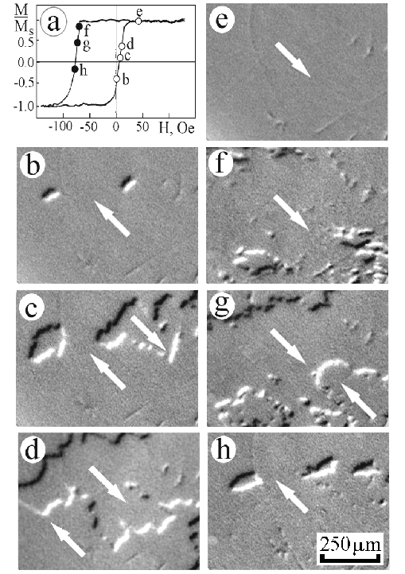

Figure 1:Hysteresis loop (a) and MOIF images of domain structure (b-h) taken during magnetization reversal of a single-crystal NiO/NiFe bilayer along the [110] unidirectional axis (b-e) and in the opposite direction (f-h). Figs. b to h correspond to conditions indicated by the circles labeled by the same letters on the hysteresis loop in Fig. 1a. Arrows indicate magnetization directions in domains.